정보통신기사(구) (2003-08-31 기출문제)
1과목: 디지털 전자회로
1. 전력 증폭기의 종류가 아닌 것은?
- A급 증폭기
- B급 증폭기
- AB급 증폭기
- AC급 증폭기
(정답률: 알수없음)

2. OP-Amp를 이용한 미분기에서 출력은 무엇에 비례하는가?
- 시정수
- offset 전압
- offset 전류
- 1/시정수
(정답률: 알수없음)
3. 그림에서 D1, D2는 5[V] 제너(zener)다이오드이다. 부하전압 VL은 다음 어느 범위에 있겠는가? (단, Vs = 10 sin(ω t + θ)[V]이다.)
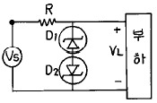
- VL ≤ 5[V]
- VL ≥ 5[V]
- -5[V] ≤ VL ≤ 5[V]
- VL ≤ -5[V] 또는 VL ≥ 5[V]
(정답률: 알수없음)
4. 단측파대 변조방식의 특징으로서 틀린 것은?
- 점유 주파수 대역폭이 양측파대보다 작다.
- 복조기에서 반송파의 동기가 필요하다.
- 송신 출력이 비교적 작게 된다.
- 전송 도중에 복조되는 경우가 있다.
(정답률: 알수없음)
5. 수신기에 진폭제한회로(리미터)와 포스터실리형 검파 회로를 사용하여 변조된 신호에서 원 신호를 복조하는 변조방식은 다음 중 어느 것인가?
- AM(진폭변조)
- FM(주파수변조)
- PM(위상변조)
- PCM(펄스부호변조)
(정답률: 알수없음)
6. 다음 부울대수의 정리 중 틀린 것은?
- x (x + y ) = y
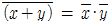
- x + yz = (x+y )(x+z )
- x + xy = x
(정답률: 알수없음)
7. 그림은 슈미트 트리거(Schmidtt trigger)회로이다. 이 회로의 설명 중 틀린 것은?
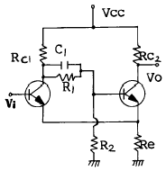
- 두개의 안정 상태를 갖는 회로이다.
- 펄스 파형을 만드는 회로로는 사용하지 못한다.
- 궤환 효과는 공통 에미터 저항을 통하여도 이루어진다.
- 입력 전압의 크기가 on, off 상태를 결정하여 준다.
(정답률: 알수없음)
8. 10진수 '3'을 그레이 코드로 변환하면?
- 0010
- 0100
- 0001
- 1010
(정답률: 알수없음)
9. M/S 플립플롭 회로는 어떤 현상을 해결하기 위한 플립플롭회로인가?
- Delay현상
- Race현상
- Set현상
- Toggle현상
(정답률: 알수없음)
10. 그림과 같은 발진회로의 출력파형은?
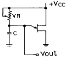
- 톱니파
- 정현파
- 구형파
- 펄스파
(정답률: 알수없음)
11. 다음은 부궤환 증폭기의 회로이다. 이 회로에 대한 설명중 옳지 않은 것은?
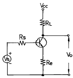
- 이 회로는 출력전류가 안정한 회로이다.
- 이 회로는 Current-series feedback이라 한다.
- 이 회로는 Voltage-series feedback이라 한다.
- 입력 임피던스와 출력 임피던스 둘 다 증가한다.
(정답률: 알수없음)
12. 다음 회로는 어떤 플립플롭을 만들기 위해 설계한 것인가?
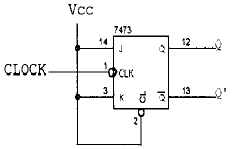
- SR 플립플롭
- JK 플립플롭
- T형 플립플롭
- D형 플립플롭
(정답률: 알수없음)
13. Ic = 12[㎃]인때 VCE = 6[V]이고, β = 100, VBE = 0.7[V]라고 하고 역포화 전류 (reverse saturation current)를 무시하는 경우 Rc를 구하시오.
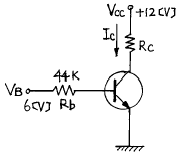
- Rc = 1.5[㏀]
- Rc = 1[㏀]
- Rc = 500[Ω]
- Rc = 100[Ω]
(정답률: 알수없음)
14. 다음 3변수 카르노도가 나타내는 함수는?
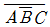
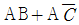
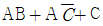
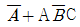
(정답률: 알수없음)
15. ECL(Emitter Coupled Logic)회로의 설명으로 잘못된 것은?
- 이 회로의 출력은 각각 OR, NAND 출력이 된다.
- 출력 임피던스가 낮고 fan out가 크다.
- 소비 전력이 크다.
- 외부 잡음 여유도(noise margin)가 적다.
(정답률: 10%)
16. 다음 회로의 전압이득(Vo/Vs)은? (단, 연산증폭기는 이상적(ideal)이며, R1=R2=R3=10[㏀], R4=1[㏀] 이다.)
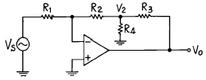
- -10
- -11
- -12
- -13
(정답률: 알수없음)
17. MS F-F 의 진리표에서 Jn=1, Kn=0 일 때 출력 Qn+1 의 값은?
- Qn
- 0
- 1
- 불확정
(정답률: 알수없음)
18. 자려발진기의 주파수안정도에 미치는 영향과 대책에 대해 잘못 설명된 것은?
- 발진회로의 저항의 크기는 실효 Q에 영향을 주어 주파수가 변하므로 저항을 최소화 한다.
- 발진회로에 접속된 부하의 변동은 실효임피던스가 변하므로 그 접속을 소결합한다.
- 발진기의 전원전압이 변하면 FET 및 트랜지스터의 동작점이 변하여 주파수가 변한다.
- 발진회로의 주위온도가 공진회로의 L,C값의 변화를 초래하므로 주파수 변동을 일으킨다.
(정답률: 알수없음)
19. 다음 그림과 같은 회로의 논리식은 어느 것인가?
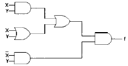
- X· Y
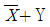
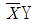
- X+Y
(정답률: 알수없음)
20. One-Short 멀티바이브레이터로부터 49[㎲]의 펄스 폭이 주어질 때 이를 만드는데 필요한 대략 시정수는?
- 65〔㎲〕
- 70〔㎲〕
- 75〔㎲〕
- 80〔㎲〕
(정답률: 알수없음)
2과목: 정보통신 시스템
21. 프로토콜 표준화에 대한 설명으로 적합하지 않은 것은?
- 표준화대상에 있어 대폭적인 개방성을 추구하고 있다.
- 광범위한 통신망과의 적응성을 확보하고 있다.
- ITU-T에서도 권고안(X.200 계열)에 OSI참조 모델과 동일한 내용을 권고하고 있다.
- 부분적, 개별적 프로토콜 표준화에 역점을 두고 있다.
(정답률: 알수없음)
22. 고장의 발생율이 상호독립이고 랜덤일 때에 시스템 평균 가동 시간은 TL , 평균 다운타임을 Td 라고 할때 시스템의 불가동율 W를 나타낸 식은?
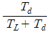
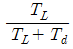
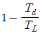
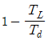
(정답률: 알수없음)
23. 메시지교환망의 설명으로 틀린 것은?
- 축적교환(Store and Forward)메시지 망이라고도 한다.
- 코드와 속도가 서로 다른 터미널끼리도 메시지 교환이 가능하다.
- 메시지를 축적한 후 전송하므로 전송로를 효율적으로 이용할 수 있다.
- 대화식 터미널 - 호스트간의 연결에 적합하다.
(정답률: 알수없음)
24. 다음 중 종합정보통신망(ISDN)에서 제공되는 서비스가 아닌 것은?
- B채널에서의 회선교환 호출
- B채널에서의 패킷교환 호출
- D채널에서의 회선교환 호출
- D채널에서의 패킷교환 호출
(정답률: 알수없음)
25. 광통신시스템에서 파장분할 다중화방식(WDM)을 사용하는 가장 적합한 장점은?
- 전송거리가 길어진다.
- 전송용량을 크게할 수 있다.
- 광수신기의 특성이 좋아진다.
- 전송손실이 감소한다.
(정답률: 알수없음)
26. 패킷 교환망에서 패킷화 기능이 없는 일반형 터미널을 접속하여 패킷의 조립과 분해 기능을 대신해 주는 장치는?
- 패킷 다중화장치(PMX)
- 패킷 교환기(PS)
- 터미널 장치(DTE)
- 교환망 구성장치
(정답률: 알수없음)
27. X.25 프로토콜의 링크레벨에서 적용되는 프로토콜은?
- LAP - B
- LAP - D
- LAP - F
- SDLC
(정답률: 알수없음)
28. 동기식 전송과 비동기식 전송의 근본적인 차이는?
- 필요로하는 대역
- 펄스의 높이
- 비동기식전송에서는 데이터에 클럭이 포함
- 동기식전송에서는 데이터로부터 클럭을 추출
(정답률: 알수없음)
29. 50개국을 망형으로 구성할 경우 필요한 중계회선수는?
- 25
- 49
- 1200
- 1225
(정답률: 알수없음)
30. PCM 음성 회선을 전송하는 경우의 E1에 대한 설명으로 맞는 것은?
- 슬롯-0(time slot 0)은 신호용으로 사용한다.
- 사용자 채널로는 30개의 슬롯을 사용한다.
- 슬롯-16은 프레이밍(framing)용이다.
- 한 프레임은 246 비트(bit)이다.
(정답률: 알수없음)
31. 통신망 분류에 대한 설명으로 옳지 않은 것은?
- 정보내용에 의한 분류는 전화망, 데이터망, 방송망 등이 있다.
- 서비스대상에 의한 분류는 공중통신망, 전용통신망 등이 있다.
- 전송방식에 의한 분류는 아날로그통신망, 회선통신망, 광통신망 등이 있다.
- 규모에 의한 분류는 구내통신망, 시내통신망, 시외통신망 등이 있다.
(정답률: 알수없음)
32. TV 신호의 수직귀선 소거 기간 동안을 이용하여 문자나 도형등을 전송하는 방식은?
- 비디오텍스
- 데이터 방송
- 텔레텍스트
- 팩시밀리 방송
(정답률: 알수없음)
33. OSI 7 계층 구조에서 이용자와 이용자 사이에서 망에 독립인 메시지 전달 서비스를 제공하기 위해 대화 레벨에서의 상호 작용을 조정하는 기능을 갖는 계층은?
- 응용 계층
- 표현 계층
- 세션 계층
- 트랜스포트 계층
(정답률: 알수없음)
34. 정보통신시스템의 변경요인 중 가장 거리가 먼 것은?
- transaction의 증가 및 처리능력 부족
- on line 업무후 batch 처리시간의 감소
- 소프트웨어 유지보수 효율저하
- 단말설비의 처리능력과 노후화
(정답률: 알수없음)
35. 국간망 신호방식인 공통선신호방식(CCS:Common Channel Signalling)의 특성 설명으로 옳은 것은?
- 신호정보가 채널 사용자 정보와 같은 전송로를 통해서 전달된다.
- 각종 가입자 서비스를 확대 제공하기 어렵다.
- 신호의 상태가 정보전송 채널의 품질을 대변한다.
- 신호망의 일부 손상이 통신망의 마비를 초래할 수 있다.
(정답률: 알수없음)
36. 지능망의 구성 요소 중 서비스 제어 로직과 가입자 정보를 제공하는 데이터베이스 시스템과 전화망 사이에서 관문 역할을 수행하는 시스템은 어느 것인가?
- SCP(service control point)
- IP(intelligent peripheral)
- SCE(service creation environment)
- SSP(service switching point)
(정답률: 알수없음)
37. ITU에서 ISDN서비스 지원을 위해 디지털 교환기 상호간에 신호방식으로 사용토록 권고한 것은?
- R1 신호 방식
- No.6 공통선 신호방식
- R2 신호 방식
- No.7 공통선 신호방식
(정답률: 알수없음)
38. OSI 7 참조모델의 계층 중 데이터 압축, 암호화 등을 수행하는 계층은?
- 세션 계층
- 응용 계층
- 네트워크 계층
- 프리젠테이션 계층
(정답률: 알수없음)
39. SS 7(Signaling System 7) 이란 약어의 의미와 관계가 먼 것은?
- 디지털 전송망을 지원하기 위한 것이다.
- ISDN에 있어서 운영을 위한 것이다.
- 정보의 교환에 사용된다.
- OSI와 같은 의미를 갖는다.
(정답률: 40%)
40. 통화레벨이 -10[dB], 잡음레벨이 -55[dB]일때 통화대잡음비(S/N)의 값은?
- -10[dB]
- -45[dB]
- 65[dB]
- 45[dB]
(정답률: 알수없음)
3과목: 정보통신 기기
41. 점대점(point-to-point)의 형태로 연결된 메쉬형 회선망에서 전화가입자의 수가 10 이라면, 필요한 회선의 수는 얼마인가?
- 15
- 25
- 35
- 45
(정답률: 40%)
42. 다음중 위성통신에서 사용되는 다원접속에 대한 설명으로 옳지 않은 것은?
- 주파수 분할 다원접속(FDMA)방식은 재래적인 아날로그 방식에서 주로 사용된다.
- 시분할 다원접속(TDMA)방식은 디지털 통신방식에서 사용한다.
- 코드분할 다원접속(CDMA)방식은 대역확산 통신방식을 이용한다.
- 스펙트럼 확산 다원접속(SSMA)은 FDMA와 TDMA의 절충형으로 주파수 이용효율이 좋다.
(정답률: 알수없음)
43. 광학문자 읽기장치(OCR)와 관계 없는 것은?
- 주사광전변환
- 랜덤스캔
- 문자판독기
- 특징 추출식별
(정답률: 알수없음)
44. 공중통신회선을 이용하여 정보의 처리, 축적, 가공 등의 부가가치를 부여한 음성 또는 데이터 정보를 제공하는 정보통신 서비스는?
- ISDN
- CATV
- VAN
- LAN
(정답률: 알수없음)
45. 다음중 광전펜으로 직접 입력하거나 그림, 챠트 등을 직접 읽어 컴퓨터에 입력시키는 기기는?
- FSS(Flying Spot Scanner)
- 드럼 스캐너
- Digitizer
- 더모그래프(Thermograph)
(정답률: 알수없음)
46. 손으로 쓴 정보를 입력할 수 있는 휴대형 컴퓨터 일종으로 전자 수첩 처럼 개인 정보 관리나 일정 관리 기능을 갖춘 한편, 컴퓨터와의 정보 교류, 팩스 송수신 등의 무선 통신 기능을 수행하는 휴대용 단말기는?
- CT2
- ISDN
- PHS
- PDA
(정답률: 64%)
47. 프로토콜이 다른 LAN을 연결할 때 또는 LAN을 WAN에 접속할 경우에 사용하며 동일한 망(network) 내에서 주고받는 데이터는 망 내에서만 전송되도록 제한을 가하여 불필요한 작업량을 제거하여 주는 장비는?
- 허브(HUB)
- 스위치(Switch)
- 라우터(Router)
- 게이트웨이(Gateway)
(정답률: 알수없음)
48. 주문형비디오(VOD)에 대한 설명으로서 옳지 않는 것은?
- 정지화,텍스트뿐만 아니라 컴퓨터 프로그램,데이터도 가능하다.
- 저장된 영상의 재생이 가능하다.
- 영상압축을 하여도 화질의 저하를 가져오지 않는다.
- 영상기록에 많은 시간이 소요된다.
(정답률: 알수없음)
49. 이동통신 가입자가 한 셀에서 다른 셀로 이동할 때 이동체의 식별 및 추적을 가능하게 함으로써, 서비스 지역 내에서 셀 간의 이동시 통화의 연결을 유지하게 하는 기술은 무엇인가?
- 위치 추적 기술
- 무선 전송 링크 제어 기술
- 핸드오프 기술
- 순방향 전력 제어 기술
(정답률: 알수없음)
50. 전송관련 장비중에서 실제데이터가 있는 단말장치에만 동적인 방식으로 각 부채널에 시간폭을 할당하는 것은?
- 동기식 다중화기
- 지능 다중화기
- 지능 변복조기
- 공동이용기
(정답률: 알수없음)
51. 정보전송시스템에서 모뎀기능과 멀티플렉서가 혼합된 형태의 장치는?
- 멀티포인트 모뎀
- 멀티포트 모뎀
- 케이블 모뎀
- ADSL 모뎀
(정답률: 30%)
52. 경로에 따른 전자파의 분류에서 지상파가 아닌 것은?
- 대류권 산란파
- 직접파
- 대지 반사파
- 회절파
(정답률: 알수없음)
53. 디지털 서비스 유닛(DSU)에 대한 설명 중 틀린 것은?
- 모뎀에 비하여 구조적으로 복잡하다.
- 선로에 한쪽극성만의 전압이 실리는 것을 방지한다.
- 정확한 동기유지가 가능하다.
- 단극성 신호를 쌍극성 신호로 변환시킨다.
(정답률: 알수없음)
54. 셀룰러 이동전화시스템에서 각 부의 설명이다. 잘못 된 것은?
- 무선기지국은 단말기와 이동전화 교환국을 연결하는 기능을 갖는다.
- 이동전화단말기는 무선송수신기, 안테나 및 제어장치로 구성되어있다.
- 무선기지국은 이동단말기에서 발·착신되는 호의 처리 등을 운용한다.
- 단말기,기지국과 이동전화교환국은 서로 통화회선과 데이터링크로 연결된다.
(정답률: 알수없음)
55. 전화수화기에 영구자석을 사용하지 않으면 어떤 현상이 생기는가?
- 음성전류의 주파수와 같은 흡인력이 발생한다.
- 주파수 특성이 평탄해진다.
- 진동판의 진동이 커진다.
- 음성전류의 2배수의 주파수 음성이 재생된다.
(정답률: 알수없음)
56. 다음은 푸시버튼 전화의 기능과 특성에 대한 설명이다. 옳지 않은 것은?
- 1개의 임펄스 숫자는 종횡 2개의 음성 대역내 주파수에 대응된다.
- 데이터 전송용 또는 원격제어용에도 사용할 수 있다.
- 2개의 LC동조회로로 구성된 주파수 발진회로가 있다.
- 저역군 3주파수와 고역군 3주파수와의 2개의 주파수대를 조합하여 선택신호를 구성한다.
(정답률: 알수없음)
57. NO.1A 전자교환기 중 통화로부라 볼 수 없는 것은?
- LSC(Line Switching Circuits)
- JSC(Junctor Switching Circuits)
- NC(Network Control)
- TSC(Trunk Switching Circuits)
(정답률: 알수없음)
58. 아날로그를 디지털로 바꾸고 디지털을 아날로그로 바꾸는 데 가장 자주 이용되는 기술이 PCM이다. 다음중 PCM의 기본적인 기능이라고 볼 수 없는 것은?
- 아날로그신호의 샘플링
- 아날로그신호의 증폭
- 샘플된 진폭의 양자화
- 양자화된 아날로그 샘플을 디지털신호로 나타내기 위한 부호화
(정답률: 알수없음)
59. 컴퓨터를 사용하여 마이크로 필름에 들어있는 정보를 검색하는 장치는?
- CAM
- CAR
- COM
- OCR
(정답률: 알수없음)
60. 네트워크를 서로 연결하여 상호접속을 위한 망간연동장치로 사용되지 않은 것은?
- 리피터
- 브리지
- 라우터
- 트랜시버
(정답률: 알수없음)
4과목: 정보전송 공학
61. 다음 중 디지털 데이터 전송 방식의 장점이 아닌 것은?
- 각종 왜곡을 제거하기가 용이
- 고속의 데이터 전송시 유리
- 전화망을 이용하여 비용 부담이 적다.
- 리피터를 사용하여 원래의 펄스열을 그대로 전송
(정답률: 알수없음)
62. 전송속도가 4800[bit/s]인 회선에서 부호오율을 50분간 측정했을때 오류 비트가 36[bit]였다면,이 회선의 평균비트오율은?
- 2.5 x 10-7
- 7.5 x 10-7
- 2.5 x 10-6
- 7.5 x 10-6
(정답률: 알수없음)
63. 시분할 다중화 통신방식에서 심볼(Symbol)간 보호시간(Guard time)를 두는 이유는?
- 혼신 방지
- 잡음 억제
- 변조 용이
- 복조 용이
(정답률: 알수없음)
64. 다음중 프레임 동기를 맞추기 위해 사용되는 기법은?
- Costas 반송루프
- PLL(Phase Lock Loop)
- 펄스 스터핑(Pulse Stuffing)
- 펄스 쉐이핑(Pulse Shaping)
(정답률: 알수없음)
65. 양자화 잡음은 다음중 어느 과정에서 생기는가?
- 위상편이키잉변조(PSK)
- 주파수편이키잉변조(FSK)
- 펄스부호변조(PCM)
- 펄스폭변조(PWM)
(정답률: 알수없음)
66. 전송하려는 부호어들의 최소 해밍거리가 6일 때 수신기 정정할 수 있는 최대오류의 수는?
- 1
- 2
- 3
- 6
(정답률: 알수없음)
67. BCH코드에 대한 다음 설명중 틀린 것은?
- BCH코드의 대표적인 코드가 Reed-Solomon이다.
- 구조가 간단하면서도 복수개의 에러를 정정할 수 있다.
- 콘볼루션 코드의 일종으로 에러정정에 사용된다.
- t개의 에러정정을 위한 부호어 사이의 최소거리는 (2t+1)보다 커야한다.
(정답률: 알수없음)
68. 이동통신 채널의 모델링에서 중요하게 다루는 요소가 아닌 것은?
- 페이딩 현상
- 도플러 현상
- 채널 간섭
- 전송 거리
(정답률: 알수없음)
69. 쌍방향 파장다중전송 방식의 구성 요소가 아닌 것은?
- 발광소자
- 분파기
- 수광소자
- 혼 반사기
(정답률: 알수없음)
70. Nyquist비를 만족하지 않았을때 일어나는 현상을 설명한 것이다. 해당사항이 아닌 것은?
- Overlap
- Aliasing
- Spectral folding
- Phase shift
(정답률: 알수없음)
71. 변복조 장치에서 제공되고 있는 루우프 귀환(loopback)기능은 다음중 어떤 목적으로 마련된 것인가?
- 전송속도의 향상
- 고장지점의 진단
- 변복조 장치의 가격저하
- 회송시간(turn - around time)의 감소
(정답률: 알수없음)
72. 전송로의 특성 중 시스템적인 왜곡(systematic distortion)에 해당되는 것은?
- 페이딩
- 에코(echo)
- 백색잡음
- 지연왜곡
(정답률: 알수없음)
73. 다음 중 병렬 전송 방식의 특징이 아닌 것은?
- 데이타 전송 속도가 빠르다.
- 컴퓨터와 프린터 간에 이용된다.
- 원거리 전송에 적합하다.
- 전송로 비용이 비싸다.
(정답률: 알수없음)
74. 전송로 부호를 선정하는 조건중 맞지 않는 것은?
- 타이밍 정보손실의 방지를 고려할 것
- 교류성분의 변동에 따른 감소를 고려할 것
- 부호오류의 감시가 용이할 것
- 클럭주파수의 상승을 고려할 것
(정답률: 알수없음)
75. 무작위 데이터를 베이스 밴드(base band) 전송할 때 전송 신호에 직류 성분이 존재하게 되어 직류 차단성의 전송로에는 적합하지 않은 방식은?
- 다이코드 방식
- 복류 RZ 방식
- AMI(alternate mark inversion) 방식
- 단류 NRZ 방식
(정답률: 알수없음)
76. 아날로그 신호를 표본화하여 얻어지는 신호와 관계 깊은 것은?
- PAM
- PWM
- PPM
- PDM
(정답률: 알수없음)
77. 다음 그림은 어떤 디지털 변조 방식의 파형인가?
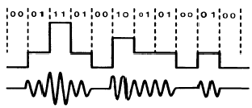
- ASK
- FSK
- PSK
- QAM
(정답률: 알수없음)
78. 다음 그림은 디지털신호 엔코딩방식들의 이론적 bit 에러율이다. 공란에 해당하는 전송방식을 올바르게 기술한 것은?
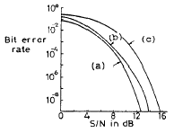
- (a)NRZ (b)RZ (c)지연변조
- (a)RZ (b)NRZ (c)지연변조
- (a)지연변조 (b)RZ (c)NRZ
- (a)지연변조 (b)NRZ (c)RZ
(정답률: 알수없음)
79. 대역폭이 B, 신호전력이 S, 잡음전력이 N일때 대역 제한된 백색 가우시안 채널의 채널용량은 몇[bits/s]인가?
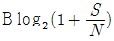
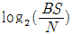
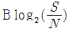
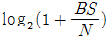
(정답률: 알수없음)
80. 동축케이블의 특성이 아닌 것은?
- 특성 임피던스는 주파수에 관계없이 일정하다.
- 전파 전송은 불가능하여, 중계소의 무인화가 불가능하다.
- 고주파 영역에서 누화는 거의 문제되지 않는다.
- 위상정수는 거의 주파수에 비례하고 감쇠량은 거의 주파수 제곱근에 비례한다.
(정답률: 알수없음)
5과목: 전자계산기일반 및 정보통신설비기준
81. Queue의 구조 중 오른쪽과 왼쪽에서 삽입연산이 가능하도록 만들어진 Queue의 변형된 구조를 무엇이라 하는가?
- Stack
- Point
- Deque
- Buffer
(정답률: 알수없음)
82. 십진수 -748을 팩 십진수(pack decimal)로 표시했을 경우의 결과는?
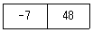
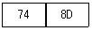
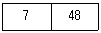
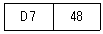
(정답률: 알수없음)
83. 정보통신윤리위원회의 설립 목적은?
- 불온통신을 억제하고 건전한 정보문화를 확립하기 위하여
- 취급중에 있는 통신비밀의 보호 대책을 강구하기 위하여
- 전기통신사업자 또는 취급자의 업무자세 확립을 위하여
- 기간통신사업자간 전기통신설비의 상호접속 및 공동사용에 관한 협정을 이행토록 하기 위하여
(정답률: 알수없음)
84. 다음 중에서 10진법의 수 374의 9의 보수는 어느 것인가?
- 374
- 376
- 574
- 625
(정답률: 알수없음)
85. 프로그램의 개념을 가장 적절하게 설명한 것은?
- 명령어의 집합
- 언어의 집합
- 암호의 집합
- 주석문의 집합
(정답률: 알수없음)
86. 전기통신설비에서 분계점을 설치하는 이유는?
- 건설과 보전에 관한 책임등의 한계를 명확하게 하기 위하여
- 시설 유지시 간단하게 분리, 시험할 수 있게 하기 위하여
- 설비의 전기적, 음향적 결합의 제반 문제점 해소를 위하여
- 예비용 전원설비등의 설치 및 공급을 위하여
(정답률: 알수없음)
87. 컴퓨터에서 프로그램을 세그멘트하는 주된 이유는 무엇인가?
- 기억 장치의 공간을 절약하기 위하여
- 컴퓨터의 실행시간을 빠르게 하기위하여
- 컴퓨터의 가격을 낮추기 위하여
- 프로그램의 작성이 쉬우므로
(정답률: 알수없음)
88. 정보통신망에 관한 표준인증 업무를 정보통신부장관으로부터 수임받은 기관은 ?
- 한국정보보호센터
- 한국통신망연구위원회
- 한국정보문화센터
- 한국정보통신기술협회
(정답률: 알수없음)
89. 파이프라인에 의한 이론적 최대 속도 증가율을 내지 못하는 주된 이유가 아닌 것은?
- 병목현상
- 자원회피
- 데이터 의존성
- 분기 곤란
(정답률: 알수없음)
90. 정보통신공사업법령에 대한 내용으로 틀린 것은 ?
- 정보통신공사는 다른 종류의 공사와 분리하여 계약을 체결하여야 한다.
- 통신기술자격자는 동시에 2이상의 공사업체에 종사할 수 없다.
- 하수급인은 하도급된 공사를 다시 제3자에게 하도급 하여서는 아니된다.
- 공사업자는 수급한 공사를 일괄하여 제3자에게 하도급할 수도 있다.
(정답률: 알수없음)
91. 기억 장치에서 명령어를 읽어 CPU로 가져오는 것을 무엇이라고 하는가?
- Indirect
- Execute
- Fetch
- Interrupt
(정답률: 알수없음)
92. 전기통신사업의 경영 주체는?
- 대통령
- 국무총리
- 정보통신부장관
- 전기통신사업자
(정답률: 알수없음)
93. 다음 중 정보통신공사가 아닌 것은?
- 건축물에 설치하는 공동시청 안테나 설비공사
- 통신선로용 지하관로의 설비공사
- 구내방송 송수신 시설의 설비공사
- 도로공사에 부수되어 시공되는 관로공사
(정답률: 알수없음)
94. 전송설비 및 선로설비는 전력유도로 인한 피해가 없도록 건설.보전되어야 한다. 기기 오동작 유도종전압이 몇[V]를 초과시 전력유도 방지조치를 하여야 하는가?
- 10[V]
- 15[V]
- 24[V]
- 58[V]
(정답률: 알수없음)
95. 정보통신공사의 현장 배치 정보통신기술자의 의무사항으로 옳지 않은 것은?
- 공사 관리 업무 성실 수행
- 모든 안전 조치 강구
- 관계 법령의 준수
- 공사 관련 인원의 지휘, 통솔
(정답률: 알수없음)
96. 다음 문항의 ( )안에 가장 적합한 것은 ?
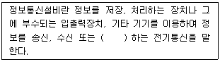
- 저장
- 제어
- 처리
- 전송
(정답률: 알수없음)
97. 다음 중 데이터 연산시 스택(stack)만 사용하는 인스트럭션(Instruction)은?
- 0-주소 인스트럭션(zero-address instruction)
- 1-주소 인스트럭션(one-address instruction)
- 2-주소 인스트럭션(two-address instruction)
- 3-주소 인스트럭션(three-address instruction)
(정답률: 알수없음)
98. 다음은 중앙처리장치 내의 하드웨어요소와 그 기능을 짝지은 것이다. 서로 맞지 않는 것은?
- Register - 기억기능
- Accumulator - 제어기능
- ALU - 연산기능
- Internal bus - 전달기능
(정답률: 알수없음)
99. 다음 중 정보통신부장관의 전기통신기술진흥을 위한 시행 계획에 포함되지 않는 사항은?
- 전기통신기술의 연구,개발에 관한 사항
- 전기통신기자재의 국산화에 관한 사항
- 전기통신기술의 표준화에 관한 사항
- 전기통신기술의 국제협력에 관한 사항
(정답률: 알수없음)
100. 마이크로프로세서의 전송명령 없이 데이터를 입출력장치에서 메모리로 전송할수 있는 것은?
- DMA
- Interrupt
- FIFO
- SCAN
(정답률: 알수없음)